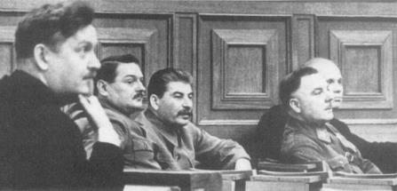

Joseph Stalin, Yüksek Sovyet’in ilk toplantısında yardımcıları ile beraber.
Nikolai Bulganin, Andrei Zdanov, Stalin, Kliment Voroşilov ve Nikita Kruşçev (26 Ocak 1938)
Eğer ideoloji dış politikayı belirliyorsa, Hitler ile Stalin’in de tıpkı üç yüzyıl önce Richelieu ile Türk sultanının yaptığı gibi el sıkışmamaları gerekirdi. Fakat ortak jeopolitik çıkar güçlü bir bağdır ve Hitler ile Stalin gibi iki eski düşmanı karşı konulmaz bir şekilde birbirine doğru itmiştir.
Olay gerçekleştiği zaman, demokrasiler duyduklarına inanamadılar; şaşkınlıktan taş kesilmeleri, onların Stalin’in mantalitesini, Hitler’inkinden daha iyi anlayamadıklarının işaretidir. Hitler gibi Stalin’in kariyeri de, toplumun fakir kesimlerinde şekillenmişti; şu farkla ki, meslek hayatında en yukarılara kadar çıkması daha uzun zaman almıştır. Hitler’in, demagojideki parlaklığına olan güveni, her şeyini tek bir zar atışına bırakmayı göze almasına neden olmuştur. Stalin, başarısını, komünist bürokrasinin içinde rakiplerinin ayağını kaydırma yeteneğine borçluydu. Güce talip olan diğer rakipler, Gürcistan’dan gelen bu meşum kişiye ilk nazarda rakip gözü ile bakmadıklarından onu ihmal etmişlerdi. Hitler, temel bir tek amaçlılıkla arkadaşları üzerinde baskı kurarak başarılı olurken; Stalin perde arkasından kendini belli etmemek yoluyla güç kazanmıştır.
Hitler, Bohem çalışma alışkanlıklarını ve kurnaz kişiliğini karar verme mekanizmasına uyarladı ve bu da hükümetine kriz dolu ve kimi zaman da amatörce bir hava verdi. Stalin, hayatının gençlik yıllarındaki sert dini eğitiminin katı disiplinini, Bolşevik dünya görüşünün acımasız yorumlarıyla birleştirdi ve ideolojiyi politik kontrol aracı haline getirdi. Hitler, kitlelerin hayranlığını kazanarak başarılı oldu. Stalin, bu kadar kişisel bir yaklaşıma güvenemeyecek kadar paranoyaktı. Nihai zaferi, gelip geçici sevgiden çok daha fazla istiyordu ve bu amacına ulaşmak için olası bütün rakiplerini tek tek ortadan kaldırmak yolunu seçti.
Hitler’in ihtiraslarının, yaşadığı süre içinde gerçekleşmesi gerekliydi; kendi sözlerine göre, o yalnızca kendisini temsil ediyordu. Stalin de onun gibi megalomandı; fakat kendisini tarihi gerçeğin bir hizmetkârı gibi görüyordu. Stalin’in, Hitler’e benzemeyen tarafı inanılmaz sabrıydı. Demokrasilerin liderlerine benzemeyen bir başka özelliği de, her zaman çok büyük bir titizlikle güç analizi yapmaya hazır olmasıydı, ideolojisinin tarihi gerçeği temsil ettiğine kesinlikle inandığı için ikiyüzlü ahlak veya duygusal bağlılıklar dediği bağlarla kısıtlanmadan Sovyet ulusal çıkarlarının acımasız bir takipçisi oldu.
Stalin gerçekte bir canavardı; fakat uluslararası ilişkilerin yönetiminde çok iyi bir realistti; sabırlıydı, kurnazdı ve amansızdı, zamanının Richelieu’suydu. Onu tanımayan Batı demokrasileri, Stalin ile Hitler arasındaki uzlaşmaz ideolojik çatışmaya güvenerek kadere meydan okudular. Stalin’i askeri işbirliğini öngören Fransız paktı ile sıkıştırdılar, Sovyetler Birliği’ni Münih Konferansından dışladılar ve onun Hitler’le bir anlaşma yapmasını engellemekte artık çok geç olunduğu bir zamanda, Stalin’le askeri görüşmelere giriştiler. Stalin’in, can sıkıcı ve hafifçe dinsel konuşmaları, düşünce ve politikadaki katılığı, demokrasi liderlerinin akıllarını karıştırdı. Oysa Stalin’in katılığı, yalnızca komünist ideoloji ile ilgili idi. Komünist inançları, taktiklerinde olağanüstü bir esneklik göstermesine olanak tanıdı.
Bu psikolojik hususların ötesinde, Stalin’in karakterinin Batı liderleri tarafından hemen hemen hiç anlaşılmayan felsefi bir merkezi daha vardı, iktidara gelmeden önce, eski bir Bolşevik olarak düşünceleri nedeniyle yıllarca hapis ve sürgün hayatı yaşamış, yoksulluk çekmişti. Tarihin dinamiklerini çok iyi bildiklerinden dolayı kendileri ile gurur duyan Bolşevikler, objektif tarihi sürecin gerçekleşmesine yardımcı olduklarına inandılar. Görüşlerine göre, kendileri ile komünist olmayanlar arasındaki fark, bir bilim adamı ile sıradan insan arasındaki fark gibiydi. Fiziksel olayları analiz ederken, bilim adamı, fiilen bu olaylara sebep olan değildir; bu olayların nasıl oluştuğunu bilmesi ona ara sıra sürece müdahale etme olanağı sağlar. Fakat hiçbir şekilde olayın doğal yasalarına aykırı bir şekilde müdahale edemez. Bunun gibi, Bolşevikler de kendilerini tarihin bilim adamları olarak düşünmekteydiler: Tarihin dinamiklerinin ortaya çıkmasına yardım etmekte, belki bunları hızlandırmakta, fakat hiçbir zaman onların sabit yönlerini değiştirmemekte idiler.
Komünist liderler, kendilerini şaşmaz, acımanın ötesine geçmiş, tarihi görevden kaçmayan ve özellikle davaya inanmayanların geleneksel argümanlarından etkilenmeyen kimseler olarak tanıttılar. Komünistler, diplomasi uygulamasında kendilerinin avantajlı olduğuna inanmışlardı. Çünkü diplomatik karşıtlarını, onların kendilerini anladığından çok daha iyi anladıklarını düşünürlerdi. Komünist düşüncesine göre, ödünler eğer verilmeliyse, ancak “objektif realite” gerektirdiğinde verilir, yoksa görüşülen diplomatların ikna yeteneklerinin etkisi altında kalınarak verilmez. Yeni diplomasi, sonunda mevcut dünya düzenini yıkacak olan sürecin bir parçasıdır; barış içinde bir arada yaşama diplomasisi ile mi, yoksa askeri çatışmayla mı yıkılacağı ise güçlerin ilişkilerinin değerlendirilmesine bağlıdır.
Ancak Stalin’in insanlık dışı ve soğukkanlı hesaplar evreninde değişmez bir tek prensip vardı: Hiçbir şey, şüpheli davalar için ümitsiz savaşlar yapmayı haklı gösteremez. Felsefi olarak, Nazi Almanya’sı ile olan ideolojik anlaşmazlık, Stalin’i ilgilendirdiği kadarıyla, Fransa ile İngiltere’yi de içine alan kapitalistlerle olan genel anlaşmazlığın bir parçasıydı. Sovyet düşmanlığının saldırısına hangi ülkenin hedef olacağı, Moskova’nın herhangi bir zamanda hangi devleti en büyük tehdit olarak kabul ettiğine bağlıydı.
Stalin, moral bakımdan çeşitli kapitalist devletler arasında hiçbir fark gözetmemiştir. Evrensel barışçı erdemleri öven ülkeler hakkındaki gerçek düşüncesi, 1928’de Briand-Kellogg Paktı’nın imzalanmasına karşı gösterdiği tepkide görülmektedir:
“Barışseverlikten bahsediyorlar; Avrupa devletleri arasındaki barıştan söz ediyorlar. Briand ve (Austen) Chamberlain birbirlerini kucaklıyorlar... Bütün bunlar saçmalık. Avrupa tarihinden biliyoruz ki, yeni savaşlar için kuvvetleri yeniden düzenleyen antlaşmaların her imzalanmasında, aslında asır sonraki savaşın yeni faktörlerini tanımlamak amacıyla imzalandıkları halde... bu antlaşmalar barış antlaşmaları olarak adlandırılmıştır...”{410}
Kuşkusuz Stalin’in korkulu rüyası, bütün kapitalist ülkelerin Sovyetler Birliği’ne aynı zamanda saldırmak için koalisyon kurması olasılığı idi. 1927’de Stalin, Sovyet stratejisini Lenin’in on yıl önce tanımladığı şekilde tamamladı... “Pek çok şey... kapitalist dünyayla kaçınılmaz olan savaşı, kapitalistler birbirleri ile savaşmaya başlayıncaya kadar geciktirmekte başarılı olup olmayacağımıza bağlıdır.”{411} Bu beklentiyi kolaylaştırmak için Sovyetler Birliği 1922’de Almanya ile Rapallo Anlaşması’nı ve 1926’da Berlin ile tarafsızlık antlaşması yaptı ve bu antlaşma 1931’de yenilendi. Bu bir kapitalist savaştan uzak durmak sözünün açıkça verildiği anlamındaydı.
Stalin bakımından, Hitler’in küfürbaz komünist düşmanlığı, Almanya ile iyi ilişkiler kurma konusunda aşılmaz bir engel oluşturmadı. Hitler iktidara geldiğinde, Stalin, uzlaşma için bazı girişimlerde bulunmakta zaman kaybetmedi. Stalin, 1934’ün Ocak ayında yapılan Onyedinci Parti Kongresi’nde şöyle diyordu: “Almanya’daki faşist rejimle pek dost değiliz. Burada sorun faşizm değildir; örneğin İtalya’daki faşizm, Sovyet Sosyalist Cumhuriyetler Birliği’nin bu ülke ile iyi ilişkiler kurmasına engel olmamıştır... Bizim temel aldığımız nokta, eskiden olduğu gibi şimdi de yalnız ve yalnız SSCB’dir. SSCB’nin çıkarları, barışı bozmayacak bir ülke ile yakınlaşmayı gerektiriyorsa, hiç tereddüt etmeden bunu yaparız.”{412}
Büyük bir ideolog olan Stalin, gerçekte ideolojiyi Realpolitik’in hizmetine koyuyordu. Richelieu ve Bismarck, onun stratejisini anlamakta herhangi bir zorlukla karşılaşmazlardı, ideolojik at gözlüğü takanlar, demokrasileri temsil eden devlet adamlarıydı; güç politikalarını reddeden demokrasileri temsil eden devlet adamları, uluslar arasında iyi ilişkilerin ön şartı olarak bu ülkelerin ortak güvenlik kurallarına genel olarak inanmaları gerektiğini ve ideolojik düşmanlığın, faşistler ve komünistler arasında pratik işbirliği olasılığına engel olduğunu düşünüyorlardı.
Demokrasiler, her iki görüşlerinde de yanılıyorlardı. Stalin, Nazi Almanya’sını hedef alan ilk girişimleri reddedildikten sonra, istemeye istemeye Hitler karşıtı kampa yaklaştı. Hitler’in Bolşevik aleyhtarı slogan ve nutuklarının ciddi olabileceğine sonunda inanan Stalin, onu çevrelemek için mümkün olan en geniş koalisyonu oluşturmaya girişti. Stalin yeni stratejisini, Komünist Enternasyonal’in 1935 Temmuz ve Ağustos aylarında yapılan Yedinci (ve sonuncu) Kongre’sinde açıkladı.{413} Bütün barışsever halkların birleşik cephe oluşturması çağrısında bulunarak, Avrupa parlamenter kurumlarını çalışamaz hale getirmek için komünist partilerin, tutarlı bir şekilde, faşistler dâhil, antidemokratik gruplarla birlikte oy kullandığı 1920’lerin komünist taktiklerinin terk edilmesi işaretini verdi.
Yalnızca bu rolü oynamak üzere atanan yeni Dışişleri Bakanı Maxim Litvinov, yeni Sovyet dış politikasının başlıca sözcüsüydü. Medeni, İngilizce ve İbraniceyi kusursuz konuşan Litvinov burjuva kökenli idi ve bir İngiliz tarihçisinin kızı ile evliydi. Resmi kimliği, Sovyet diplomasisinde kariyer yapacak bir adamdan çok, bir halk düşmanı olmaya daha uygundu. Litvinov’un liderliğinde, Sovyetler Birliği, Milletler Cemiyeti’ne girdi ve ortak güvenliği en yüksek sesle savunan ülkelerden birisi oldu. Stalin, Hitler’in Mein Kampf’ında yazdığı şeyleri gerçekleştirmesi ve Sovyetler Birliği’ni de birinci hedefi haline getirmesi olasılığına karşı kendini güvence altına almak için, Wilson’un retoriğini tekrarlamaya hazırdı. Bir siyaset bilimci olarak Robert Legvold, Stalin’in amacının kapitalist dünyayla barış yapmak değil, onlardan olabildiğince çok yardım koparmak olduğuna işaret etmiştir.{414}
Karşılıklı derin itimatsızlık duygusu, demokrasiler ile Sovyetler Birliği arasındaki ilişkilere egemendi. Stalin, 1935’te Fransa ile ve onu izleyen yıl Çekoslovakya ile paktlar yaptı. Fakat 1930’lu yılların Fransız liderleri, karşıt bir yön izleyerek askeri görüşmeleri reddettiler. Stalin kaçınılmaz olarak bu tutumu, Hitler’e, ilk önce Sovyetler Birliği’ne saldırması için bir davetiye olarak yorumladı. Kendini güvence altına almak için, Çekoslovakya’ya Sovyet yardımını, önce Fransa’nın Çekoslovakya’ya yardım yükümlülüğünü yerine getirmesine bağladı. Kuşkusuz bu tavır, Stalin’e, emperyalistleri, bu sorun için kendi aralarında savaşmaya bırakma seçeneği tanıdı. Fransız-Sovyet ittifakı cennette yapılmış bir ilişki değildi.
Fransa’nın Sovyetler Birliği ile askeri ittifakı reddederken politik bağlar kurmaya istekli olması, demokrasilerin dış politikasının, iki savaş arası dönemde sürüklendiği hayal dünyasını göstermektedir. Demokrasiler, ortak güvenlikle ilgili ateşli nutuklara değer vermişler, fakat onu işler bir duruma getirmekten kaçınmışlardır. I. Dünya Savaşı, Büyük Britanya ve Fransa’ya, ittifak halinde de olsalar, Almanya ile savaşmanın tehlikeli bir girişim olduğunu öğretmeliydi. Amerika’nın savaşa katılmasına rağmen 1918’de Almanya nerdeyse galip geliyordu. Sovyet veya Amerikan yardımı olmadan Almanya’yla savaşmayı düşünmek, Majino Hattı mantalitesini, kendi güçlerinin olduğundan çok fazla görülmesiyle de bir araya getirdi.
Demokrasi liderlerinin, tam bir Bolşevik, objektif ve maddeci faktörlerin yılmaz bir inananı olan Stalin’in, ortak güvenliğin hukuki ve moral doktrinine kayabileceğine inanmaları için ancak aşırı ölçüde tek taraflı düşünmeleri gerekirdi. Çünkü Stalin ve arkadaşlarının, kurulu uluslararası düzenden hoşnut olmamalarının ideolojiden başka nedenleri vardı. Her şeyden önce, Sovyetlerin Polonya ile sınırları kuvvet kullanılarak empoze edilmişti ve Sovyetlerin kendilerine ait olduğunu düşündükleri Besarabya’yı da Romanya almıştı.
Doğu Avrupa’daki olası Almanya kurbanları da Sovyet yardımını istemiyorlardı. Versay Antlaşması ile Rus Devrimi birlikte, Doğu Avrupa’da herhangi bir ortak güvenlik sistemi için çözülemez bir problem yaratmışlardı: Sistem Sovyetler Birliği olmadan askeri bakımından işleyemezdi; Sovyetler Birliği olunca da politik bakımdan işlemez oluyordu.
Batı diplomasisi de, Stalin’in, Sovyet karşıtı kapitalist entrika paranoyasını rahatlatacak hiçbir şey yapmadı. Sovyetler Birliği ile Locarno Paktı’nın sona erdirilmesine ilişkin olarak hiçbir diplomatik temas yapılmadı ve Sovyetler Münih Konferansı’ndan da tamamen dışlandı. Doğu Avrupa’da bir güvenlik sistemi oluşturulması için görüşmeye de isteksizce ve ancak 1939’da Çekoslovakya’nın işgalinden sonra çok geç olarak çağrıldı.
Bununla beraber, Hitler-Stalin Paktı’nın yapılmış olması kabahatini Batı politikasına yüklemek, Stalin’in psikolojisinin yanlış okunması anlamına gelir. Stalin’in paranoyası, olası bütün rakiplerini ortadan kaldırması ve ancak fantezilerinde kendisine karşı olan milyonları öldürmesi veya sürgüne göndermesi ile fazlasıyla kendisini göstermişti. Bütün bunlara rağmen, dış politika konusunda Stalin çok soğukkanlı ve hesaplı olduğunu gösterdi ve özellikle güç dengesini anlama düzeylerini, kendisinden çok aşağı gördüğü kapitalist liderlerin kışkırtmalarına kapılarak acele hareket etmekten kaçındığı için büyük gurur duyuyordu.
Münih Konferansı esnasında Stalin’in ne yapmak niyetinde olduğunu, insan ancak tahmin edebilir. Bununla beraber, birbiri ardına yaptığı siyasi temizliklerle ülkesini şiddetle sarsan Stalin’in en son izleyeceği yol, ortak bir yardım anlaşmasının otomatik ve intihar sayılabilecek bir şekilde uygulaması olurdu. Çekoslovakya ile yapılan antlaşma, Sovyetler Birliği’ni, ancak Fransa’nın savaşa girmesinden sonra bağladığından, Stalin’e birçok seçenek sağladı. Örneğin, Çekoslovakya’ya yardım için Romanya ve Polonya’dan geçiş hakkı isteyebilir ve bu ülkelerin neredeyse kesin olan retlerini bir mazeret olarak kullanarak Orta ve Batı Avrupa’da savaşın gelişmesini öğrenecek kadar bekleyerek zaman kazanabilirdi. Savaşın sonucunun değerlendirilmesine bağlı olarak, Rus Devrimi’nden hemen sonra Polonya’ya ve Romanya’ya kaptırılan Rus topraklarını geri alabilirdi ki bunu bir yıl sonra yapacaktı. Sovyetler Birliği’nin, ortak güvenlik adına Versay toprak düzenlemesinin son savunucusu olarak barikatlar kurması, en az olası sonuç olabilirdi.
Kuşkusuz Münih, Stalin’in demokrasiler hakkındaki kuşkularını doğruladı. Bununla beraber, hiçbir şey Stalin’i, ne pahasına olursa olsun kapitalistleri birbirine düşürmek ve Sovyetler Birliği’ni onların bu savaşının kurbanı olmaktan uzak tutmak gibi bir Bolşevik olarak görev kabul ettiği bir işten alıkoyamazdı. Böylece, Münih’in etkisi, öncelikle Stalin’in taktiklerini değiştirmesi oldu. Şimdi Stalin, bir Sovyet paktı için pazarı açmıştı. Bu, Hitler’in ciddi bir öneri yapması durumunda demokrasilerin kazanma ümidi olmayan bir açık artırmaydı. Ekim 1938’de, Münih Antlaşması’nı açıklamak için Sovyet Dışişleri Bakanlığı’na çağrılan Fransa büyükelçisi, Dışişlerinin Yardımcı Komiseri Vladimir Potemkin tarafından şu felaketli sözlerle karşılandı: “Zavallı dostum, ne yaptınız? Bizim için, Polonya’nın dördüncü kez bölünmesinden başka bir sonuç göremiyorum.”{415}
Bu nükteli söz, Stalin’in dış politikaya olan soğuk yaklaşımını bir an için gözler önüne sermiş oldu. Münih’ten sonra, Almanya’nın bundan sonraki hedefinin Polonya olacağı kesindi. Stalin, ne Sovyet sınırında Alman ordusu ile karşılaşmak, ne de Hitler’le savaşmak istediğine göre, Polonya’nın dördüncü kez bölünmesi tek alternatif olarak kalıyordu. (Gerçekten 1772’de Polonya’nın Prusya ve Avusturya arasındaki bölünmesini ilk defa öneren Büyük Katerina da aynı mantıkla hareket etmiştir). Stalin’in ilk hareketi Hitler’in yapması için bütün bir yıl beklemesi, dış politikasını yönetirken çelik gibi sinirlere sahip olduğunu da göstermektedir.
Hedefini sağlam bir şekilde yerine oturttuktan sonra, Stalin ikinci hareket olarak Sovyetler Birliği’ni sessizce ön cephe hattından çekmeğe başladı. 27 Ocak 1939’da, Londra’da News Chronicle gazetesi, Moskova Büyükelçisi Ivan Malsky’ye yakınlığı ile tanınan diplomatik muhabirinin bir yazısını yayınladı. Yazısında Almanya ile Sovyetler Birliği arasında olası bir yakınlaşmadan bahseden yazar, Batı demokrasileri ile faşist diktatörler arasında önemli bir fark olmadığı şeklindeki Stalin’in standart tezini tekrar ediyor ve bunu, Sovyetler Birliği’ni ortak güvenliğe herhangi bir otomatik bağlılıktan kurtarmak için kullanıyordu:
“Şu anda Sovyet hükümetinin, Büyük Britanya ve Fransa’ya, Almanya ve İtalya ile herhangi bir anlaşmazlığa düşmeleri durumunda yardım etmeye hiç niyeti olmadığı açıktır... Sovyet hükümetinin görüşüne göre, bir tarafta İngiliz ve Fransız hükümetleri, diğer tarafta Alman ve İtalyan hükümetleri olmak üzere iki tarafın konumları arasında Batı demokrasisinin savunulması için ciddi özverilerde bulunulmasını haklı çıkaracak büyük bir fark yoktur.”{416}
Sovyetler Birliği, ideoloji bazında, çeşitli kapitalist ülkeler arasında birisini seçmeye gerek görmediğinden, Moskova ile Berlin arasındaki anlaşmazlıklar, pratik bir temel üzerinde çözülebilirdi. Bu görüşün dikkatten kaçmaması için, Stalin, örneği görülmeyen bir şekilde yazıyı kelimesi kelimesine, Komünist Partisi’nin resmi gazetesi olan Pravda’da yayınlattı.
Hitler’in Prag’ı işgalinden beş gün önce, 10 Mart 1939’da, Stalin Moskova’nın yeni stratejisinin kendisine ait açıklaması ile ileri doğru bir adım attı. Stalin’in beş yıl önce ortak güvenliği ve “birleşmiş cepheler”i benimsemesinden sonra yapılan ilk toplantı olan Onsekizinci Parti Kongresi’nde fırsat ortaya çıktı. Siyasi temizlik hareketleri, arkadaşlarını ortadan kaldırdığından saflar oldukça seyrekleşmişti ve hayatta kalanlar bundan dolayı mutlu olmalıydılar. Beş yıl önceki 2000 delegeden yalnızca 35’i oradaydı. 1100 delege karşı devrim faaliyetleri dolayısıyla tutuklanmıştı; 131 üyeli Merkez Komitesi’nin 98 üyesi, Kızıl Ordu’nun 5 mareşalinden 3’ü, Savunma Bakanlığı’nın 11 komiser yardımcısının hepsi, bütün askeri bölge komutanları, Yüksek Askeri Konsey’in 80 üyesinden 75’i tasfiye edilmişlerdi.{417} Onsekizinci Parti Kongresi, bir devamlılığın kutlanması olmaktan çok uzaktı. Kongre’de hazır olanlar, dış politikanın inceliklerinden çok, hayatta kalabilme çaba ve endişesi içindeydiler.
1934’te olduğu gibi, korkudan yılmış bu dinleyicilere Stalin’in sunduğu ana tema, düşman bir uluslararası çevre içinde Sovyetler Birliği’nin barışçıl niyetleri idi. Ancak vardığı sonuçlar, bir önceki parti kongresinin ortak güvenlik kavramından köklü değişiklikleri içeriyordu. Sonuçta Stalin, kapitalistler arasındaki çatışmada Sovyetlerin tarafsızlığını ilan etti:
“Sovyetler Birliği’nin dış politikası şeffaf ve açıktır. Biz, barış ve bütün ülkelerle iş ilişkilerimizin kuvvetlenmesini istiyoruz. Bizim konumumuz budur ve bu ülkeler Sovyetler Birliği ile benzer ilişkileri devam ettirdikleri ve ülkemizin çıkarlarına tecavüz etme girişiminde bulunmadıkları sürece bu konumumuza bağlı kalacağız.”{418}
Pek zeki olmayan kapitalist liderlerin ne demek istediğini anlamaları için, Stalin News Cronicle’daki yazının ana temasını hemen hemen kelimesi kelimesine tekrarladı: Demokrasiler ile Almanya aynı sosyal bünyeye sahip olduklarına göre, Almanya ile Sovyetler Birliği arasındaki farklılıklar, başka herhangi bir kapitalist ülke ile Sovyetler Birliği arasındaki farklılıklardan daha büyük değildir. Özetlerken Stalin, hareket serbestliğini korumak ve yakın bir savaşta Moskova’nın iyi niyetini en yüksek fiyatı verene satmak hususlarındaki kararlılığını seslendirdi. Bir başka cümlede, Stalin “dikkatli olmaya ve ülkesinin ateş üzerindeki kestaneleri başkalarına aldırmaya alışmış savaş kışkırtıcılarının yarattığı anlaşmazlıkların içine çekilmesine izin vermemeye”{419} yemin etti. Aslında Stalin, açıkça Nazi Almanya’sını bir öneride bulunmaya davet ediyordu.
Stalin’in yeni politikasının eskisinden farklılığı, temelde sözlerinin vurgusundaydı. Ortak güvenlik ve “birleşmiş cepheler” kavramlarını en kuvvetli şekilde savunduğu günlerde bile Stalin, Sovyet bağlantılarını öyle bir şekilde yaptı ki, savaş başladıktan sonra ayrı bir anlaşma yapmak seçeneğini daima elinde bulundurdu. Fakat şimdi, 1939’un baharında, Çekoslovakya’nın geri kalan parçası henüz Almanya tarafından işgal edilmemişken, Stalin bir adım daha ileri gidiyordu. Savaştan önce ayrı bir anlaşma yapmak için birtakım manevralar yapmaya başladı. Kimse Stalin’in niyetlerini gizli tuttuğu konusunda bir yakınmada bulunamaz; demokrasilerin geçirdiği şok, muhteris bir ihtilalci olan Stalin’in, her şeyden önce soğukkanlı bir stratejisi olduğunu anlama yeteneklerinin olmamasından ileri geliyordu.
Prag’ın işgalinden sonra, Büyük Britanya Almanya’ya karşı yatıştırma politikasını terk etti. İngiliz kabinesi, önceden olduğundan küçük gösterdiği Nazi tehlikesinin yakınlığını şimdi de abartıyordu; Hitler’in Çekoslovakya’dan hemen sonra başka bir ülkeye saldıracağına inanıyordu; bazılarına göre Belçika’ya, bazılarına göre Polonya’ya bir saldırı olacaktı. 1939 Mart’ının son günlerinde, hedefin Almanya ile sınırı bile olmayan Romanya olduğu söylentisi yayıldı. Oysa ikinci ve alakasız bir hedefe hemen saldırmak Hitler’in karakterine hiç uymuyordu. Kendisine uygun olan taktik, bir daha vurmadan önce son kurbanım iyice demoralize etmek için birinci darbenin etkisinin iyice yerleşmesine izin vermekti. Ne olursa olsun, geçmişe baktığımızda, Büyük Britanya’mı stratejisini planlamak için liderlerinin sanıldığından fazla zamanları olduğunu görüyoruz, İngiliz kabinesi, Stalin’in Onsekizinci Parti Kongresi’nde yaptığı açıklamaları dikkatlice analiz etmiş olsaydı, Büyük Britanya’nın ne kadar şevkle Hitler’e karşı direnmeyi organize ederse, Stalin’in her iki tarafa karşı elinde bulundurduğu manivelayı olduğundan daha etkili göstermek için kendini o kadar çok uzakta tutacağının farkına varacaktı.
Şimdi İngiliz kabinesi, önemli bir stratejik karar almak zorundaydı. Hitler’e karşı direnişte yaklaşımı, bir ortak güvenlik sistemi oluşturmak şeklinde mi olacaktı, yoksa geleneksel bir ittifak mı organize edecekti? Birincisini seçerse, pek çok ülke, Nazi karşıtı direnişe katılmaya davet edilebilirdi; ikincisini seçerse, Britanya, Sovyetler Birliği gibi olası müttefiklerle çıkarlarını uygun hale getirmek için ödün vermek zorunda kalacaktı.
Kabine ortak güvenlikten yanaydı. 17 Mart’ta Yunanistan, Yugoslavya, Fransa, Türkiye, Polonya ve Sovyetler Birliği’ne notalar gönderilerek, Romanya’ya karşı olası bir tehdit karşısında tutumlarının ne olacağı soruldu. Temel varsayım, herkesin aynı çıkarı paylaştığı ve tek bir tutum takınılacağı merkezinde idi. Britanya, birdenbire 1918’den beri yapmadığı bir şeyi yapıyor, bütün Doğu Avrupa için toprak güvencesi öneriyordu.
Bu ülkelerin cevapları, ortak güvenlik doktrininin temel zayıflığını, yani bütün ulusların, hiç değilse bütün olası kurbanların saldırıya karşı direnmede aynı çıkarları olduğunu gösterdi. Her Doğu Avrupa devleti kendi problemlerini özel bir sorun olarak ortaya koydu ve ortak değil, kendi ulusal endişelerini vurguladı. Yunanistan tepkisini, Yugoslavya’nın tepkisine bağladı. Yugoslavya, Büyük Britanya’nın niyetinin ne olduğunu sordu ve böylece tekrar başa dönülmüş oldu. Polonya, Büyük Britanya ile Almanya arasında taraf tutmaya hazır olmadığına işaret etti veya Romanya’nın savunmasına katılmayacağını söyledi. Polonya ve Romanya, ülkelerinin savunmasına Sovyetlerin katılmasına razı değillerdi. Sovyetler Birliği’nin cevabı ise, İngiliz notalarının gönderildiği bütün ülkelerin Budapeşte’de bir konferansta toplanmaları önerisiydi.
Bu, zekice bir manevraydı; konferans toplanmış olsa idi, Berlin’den korktukları kadar, Moskova’dan da korkan ülkelerin savunmasına Sovyetlerin katılması prensibi kabul edilmiş olacaktı; bu öneri reddedilirse, Kremlin’in, Almanya ile başka bir çözüm arama tercihini gerçekleştirirken uzakta durmak için bir mazereti olacaktı. Moskova gerçekte, Doğu Avrupa ülkelerinin, var oluşlarına yönelik başlıca tehdit olarak Almanya’yı tanımlamalarını istiyor ve bunu kendi niyetlerini netleştirmeden önce yapmalarını istiyordu. Hiçbir Doğu Avrupa ülkesi bunu yapmak istemediğinden Budapeşte konferansı da hiçbir zaman toplanamadı.
Bu isteksiz cevaplar, Neville Chamberlain’i başka kombinezonlar aramaya yöneltti. 20 Mart’ta Büyük Britanya, Fransa, Polonya ve Sovyetler Birliği tarafından bir niyet deklarasyonu yayınlanarak bir Avrupa devletinin bağımsızlığının tehdit edilmesi durumunda “ortak hareket etmek amacıyla” danışma yapılmasını önerdi. I. Dünya Savaşı öncesi Üçlü İtilafın yeniden canlandırılması anlamındaki bu öneri, caydırıcılık etkili olmazsa uygulanacak askeri strateji veya doğal kabul edilen Polonya ile Sovyetler Birliği arasındaki işbirliğinin gerçek olması olasılığı hakkında hiçbir şey söylemiyordu.
Kendi askeri kapasitesini olduğundan büyük gören ve bu görüşüne Büyük Britanya’nın da katıldığı Polonya, Sovyetler Birliği ile ortak hareket fikrine karşı çıkarak, Büyük Britanya’yı, Polonya ile Sovyetler Birliği’nden birini seçmek zorunda bıraktı. Polonya’ya güvence verse, Stalin’in ortak savunmaya katılması olasılığı azalacaktı. Polonya, Almanya ile Sovyetler Birliği arasında olduğundan, Büyük Britanya, Stalin’in karar vermesine fırsat bırakmadan savaşa girmek zorunda kalacaktı. Diğer taraftan, Büyük Britanya, bir Sovyet paktı konusunda çabalarını yoğunlaştırsa, bu kez Stalin, Polonyalılara yardım etmenin bedelini talep edecek ve sınırlarını, batıya, Curzon Hattı’na doğru genişletmek isteyecekti.
Halkın kızgınlığından etkilenen ve geri çekilmenin, Büyük Britanya’nın durumunu daha da zayıflatacağına inanan İngiliz kabinesi, jeopolitik gerekler ne olursa olsun başka ülkeleri feda etmeyi reddetti. Aynı zamanda, İngiliz liderler, Polonya’nın askeri bakımdan Sovyetler Birliği’nden daha kuvvetli olduğu ve Kızıl Ordu’nun hücum gücü olmadığı gibi yanlış bir kanıya sahiptiler. Sovyet askeri liderlerinin, geniş bir siyasi temizliğe konu edildiği son olayların ışığında bu doğru bir değerlendirme olabilirdi. Her şeyden önemlisi, İngiliz liderler, Sovyetler Birliği’ne karşı çok derin bir itimatsızlık besliyorlardı. Chamberlain şöyle yazıyordu: “İtiraf etmeliyim ki, Rusya’ya karşı çok derin bir itimatsızlık içindeyim. Rusya’nın, istese bile, etkili bir hücum yapma yeteneği olduğuna inanmıyorum. Bizim özgürlük anlayışımız ile uzaktan yakından ilgisi olmayan ve herkesi kulağından yakalamak çabasında olan niyetlerinden de kuşkuluyum.”{420}
Kendisini ciddi bir zaman darlığı içinde hisseden Büyük Britanya harekete geçti ve Versay Antlaşması’ndan beri devamlı olarak reddettiği bir çeşit barış zamanı kıta güvencesi ilan etti. Almanya’nın Polonya’ya her an saldırabileceği şeklindeki raporlardan endişelenen Chamberlain, Polonya ile ikili bir ittifak yapmak için görüşmelere başlamakta bir an tereddüt etmedi. 30 Mart 1939’da Polonya’ya güvence veren tek taraflı garanti taslağını kendi eliyle hazırladı ve ertesi gün Parlamento’ya sundu. Güvence, sonradan yanlış bilgiye dayandığı anlaşılan bir Nazi saldırısını caydırmak için alınan geçici bir önlemdi. Verilen güvenceyi, daha bol zamanda hazırlanacak geniş bir ortak güvenlik sistemi izleyecekti. Kısa bir zaman sonra, aynı mantığa dayanan tek taraflı güvenceler Yunanistan ve Romanya’ya da verildi.
Moral kızgınlık ve stratejik karışıklığın etkisi ile hareket eden Büyük Britanya, böylece bütün savaş sonrası başbakanlarının savunamayacaklarını ve savunmayacaklarını ısrarla söyledikleri ülkelere güvence vermiş oluyordu. Doğu Avrupa’nın Versay sonrası gerçekleri İngiliz deneyimine o kadar uzak hale gelmişti ki, kabine, Stalin’in Almanya’ya karşı seçeneklerini çoğaltan ve önerilen ortak cepheden çekilmesini kolaylaştıran bir seçim yaptığının farkında bile olmadı.
Büyük Britanya liderleri, Stalin’in kendi stratejilerine katılacağını o kadar doğal kabul ediyorlardı ki, bunun zamanlamasını ve alanını da kontrolleri altında tutabileceklerine inandılar. Dışişleri Bakanı Lord Halifax, Sovyetler Birliği’nin yedek kuvvet olarak bulundurulmasını ve “belli durumlarda en uygun şekilde yardım etmeye çağrılmasını”{421} istedi. Halifax’ın kafasındaki varsayım, Sovyet birliklerinin, kendi ülke sınırlarının ötesine geçmesi değil, onlardan yalnızca cephane sağlanmasıydı. Sovyetler Birliği’nin böyle ikinci derecede bir rolü kabul etmek için ne gibi bir nedeni olduğunu açıklamadı.
Gerçekte, İngilizlerin Polonya’ya ve Romanya’ya verdiği güvenceler, eğer varsa, Sovyetlerin Batı demokrasileri ile bir ittifak yapmak için ciddi görüşmeler içine girmesini teşvik edecek şeyleri ortadan kaldırmış oldu. En başta, Baltık devletleri hariç, Sovyetler Birliği’nin bütün Avrupa komşularının sınırları, hiç değilse kâğıt üzerinde güvence altına alınıyor ve Alman ihtiraslarına olduğu gibi Sovyet ihtiraslarına da set çekiliyordu. (Büyük Britanya’nın bu gerçeğin farkında olmaması, “barışsever uluslar birleşmiş cephesinin” Batı kafalarında ne derecede yer tutmuş olduğunu göstermesi bakımından dikkat çekicidir.) Fakat daha önemlisi, tek taraflı İngiliz güvenceleri Stalin’e sunulmuş bir hediye gibiydi; çünkü bu durum Stalin’e, başlayacak herhangi bir görüşmede talep edebileceğinin en çoğunu kendiliğinden sağlamış oldu. Eğer Hitler doğuya hareket ederse, Büyük Britanya’nın, daha Sovyet sınırına varılmadan savaşa başlayacağı güvencesi verilmişti. Bu suretle Stalin, karşılık olarak hiçbir yükümlülük altına girmeden Büyük Britanya ile de facto bir ittifaktan yararlanmış oluyordu.
İngiltere’nin Polonya’ya verdiği güvence dört varsayıma dayanıyordu ve zamanla bu varsayımların hepsinin yanlış olduğu anlaşıldı: Polonya, önemli bir askeri güçtü, hatta Sovyetler Birliği’nden daha güçlüydü; Fransa ve Büyük Britanya birlikte, başka bir müttefikin yardımı olmadan Almanya’yı yenebilecek kadar güçlüydü; Sovyetler Birliği’nin, Doğu Avrupa’daki status quo’nun korunmasında çıkarı vardı; Sovyetler Birliği ile Almanya arasındaki ideolojik uçurum o kadar genişti ki, er veya geç, Sovyetler Birliği Hitler karşıtı koalisyona girecekti.
Polonya cesurdu, fakat önemli bir askeri güç değildi. Fransız Genelkurmayının bir çeşit Fransız saldırısının beklendiği şeklindeki imaları ile yanıltılması nedeniyle görevini daha da yapamaz hale sokuldu. Fransa’nın takip ettiği savunma stratejisi, Polonya’yı Alman şiddetli saldırısı ile tek başına karşı karşıya bırakacaktı ve Batılı liderlerin de Polonya’nın askeri kapasitesinin, bu görevin altından kalkamayacağını bilmeleri gerekirdi. Aynı zamanda, Polonya Sovyet yardımını kabul etmeye ikna edilemezdi; çünkü Polonya liderleri, “kurtarıcı” Sovyet ordusunun “işgalci” Sovyet ordusuna dönüşeceğine inanıyorlardı. (Bunun doğruluğu da sonradan ortaya çıktı.) Ayrıca, demokrasilerin değerlendirmesi, Polonya, yenilse bile Almanya’ya karşı savaşı yalnız başlarına kazanabilecekleri merkezinde idi.
Sovyetlerin, Doğu Avrupa’da status quo’mm korunmasındaki çıkarı da, eğer bir zamanlar var olduysa bile, Onsekizinci Parti Kongresi ile son bulmuş oldu. İşin can alıcı noktası, Stalin’in artık Hitler’e dönme seçeneğine sahip olması ve Polonya’ya verilen İngiliz güvencesinden sonra elindeki Nazi kartını emin bir şekilde kullanabileceği gerçeği idi. Stalin’in işi kolaylaştırılmıştı; çünkü Batı demokrasileri onun stratejisini kavramayı reddetmişlerdi. Oysa bu strateji, Richelieu, Metternich, Palmerston veya Bismarck için çok açık olurdu. Çok basit olarak, bu strateji, Sovyetler Birliği’nin herhangi bir düzenlemede kendisini en son taahhüt altına sokan büyük ülke olmasını garanti etmek ve böylece Sovyet işbirliğini veya Sovyet tarafsızlığını, en yüksek fiyatı verene satmak için pazarı sağlayan hareket özgürlüğüne kavuşmaktı.
Polonya’ya İngiliz güvencesi verilmeden önce, Stalin, Almanya’ya yaptığı kurların, demokrasilerin Doğu Avrupa’dan ellerini çekmesine neden olup, kendisini Hitler’le karşı karşıya bırakmaları korkusu ile çok dikkatli hareket etmek zorundaydı. Verilen güvenceden sonra, Büyük Britanya’nın, Sovyetlerin batı sınırı için savaşacağından emin olmakla kalmayıp, savaşın 600 mil batısında, Almanya-Polonya sınırında başlayacağı güvencesini de almış oldu.
Stalin’in yalnızca iki endişesi daha vardı: Birincisi, Polonya’ya verilen İngiliz güvencesinin sağlam olduğundan emin olmak istiyordu; ikincisi, Alman seçeneğinin gerçekten mevcut olup olmadığının öğrenmek zorundaydı. Paradoksal olarak, Büyük Britanya, Hitler’i caydırmak amacıyla Polonya ile ilgili olarak ne kadar çok iyi niyet gösterirse, Stalin Almanya ile ilgili olarak o kadar çok manevra alanı kazanıyordu. Büyük Britanya, Doğu Avrupa’da status quo’nun korunması peşindeydi. Stalin ise, en geniş seçenekleri ve Versay Antlaşması’nı bozmayı istiyordu. Chamberlain savaşı önlemek arzusunda idi. Savaşın kaçınılmaz olduğunu gören Stalin ise, savaşa katılmadan onun faydalarından nasıl yararlanacağını düşünüyordu.
Stalin, iki taraf arasında, bir sağa bir sola dönüp durdu. Fakat sonuçta bu bir yarışma değildi. Yalnızca Hitler ona Doğu Avrupa’da istediği toprak kazançlarını önerebilirdi ve bunun karşılığında, Sovyetler Birliği’ni dışta tutmak koşuluyla bir Avrupa savaşı bedelini ödemeğe hazırdı. 14 Nisan’da, Büyük Britanya, Sovyetler Birliği’ne tek taraflı olarak “Sovyetler Birliği’nin Avrupalı komşularından birine bir saldırı olduğunda ve saldırı o ülke tarafından direnişle karşılandığında, Sovyet hükümeti yardımı hazır olacaktır”{422} şeklinde bir deklarasyon yayınlanmasını önerdi. İlmiğin içine başını sokmayı reddeden Stalin, bu tek taraflı ve naif öneriyi kabul etmedi ve 17 Nisan’da üç parçalı karşı önerisi ile cevap verdi: Sovyetler Birliği, Fransa ve Büyük Britanya arasında bir ittifak, bu ittifaka işlerlik kazandırmak için askeri bir sözleşme ve Baltık Denizi ile Karadeniz arasındaki bütün ülkelere güvence verilmesi.
Stalin’in böyle bir önerinin asla kabul edilmeyeceğini bilmesi gerekirdi. Her şeyden önce, Doğu Avrupa ülkeleri böyle bir şey istemiyorlardı; ikincisi, detaylı bir askeri sözleşmenin görüşülmesi çok fazla zaman alacak bir işti ve son olarak, Büyük Britanya’nın son on beş yıldan beri Fransa’dan esirgediği bir ittifakı, şimdi olası bir savaşta cephane sağlayıcı olarak bir rol vermekten daha fazla bir önem vermeyi düşünmediği bir ülkeye vermesi düşünülemezdi. Chamberlain, “Küçük Doğu Avrupa ülkelerinin cephane ihtiyacını karşılamak için böyle bir ittifaka gerek olduğu ileri sürülemez...”{423} dedi.
Bu çekinceleri aşan İngiliz liderler, her hafta biraz daha Stalin’in şartlarına yaklaştıkça, o da ortaya koyduğu bedeli devamlı olarak artırıyordu. Mayısta, Stalin’in güvendiği adamı Vyacheslav Molotov Dışişleri Bakanı olarak Litvinov’un yerine geçti. Bu da görüşmelerin şahsen Stalin tarafından yürütüleceğine ve görüşmeciler arasında iyi kişisel ilişkiler olmasının artık Sovyetler için önceliği olan bir şey olmadığını gösteriyordu. Bilgiç bir tavır ile Molotov, Sovyetler Birliği’nin batı sınırındaki bütün ülkelere, tek tek adları belirlenerek ve böylece bazılarının resmen reddetmeleri olasılığı sağlanarak, her iki tarafça da güvence verilmesini talep etti. Aynı zamanda “saldırı” teriminin “dolaylı saldırı” terimini de, yani kuvvet kullanılmamış olsa da Alman tehditleri nedeniyle boyun eğme durumlarını da içine alacak şekilde genişletilmesinde ısrar etti. Sovyetler Birliği, “boyun eğme” terimi ile neyin anlaşılması gerektiğinin tanımlanmasını kendisine ayırdığına göre, Stalin gerçekte Sovyetler Birliği’nin bütün Avrupalı komşularının iç işlerine karışmak için sınırsız bir hak talep ediyor demekti.
Temmuza kadar Stalin yeteri kadar şey öğrenmişti, İngiliz liderlerin, pek istekli olmasalar da, kendi ileri sürdüğü şartlara yakın bir ittifaka evet diyeceğini biliyordu. 23 Temmuz’da, Sovyetler ve Batı görüşmecileri, görünüşe göre her iki taraf için de tatminkâr bir ittifak taslağı üzerinde görüş birliğine varmışlardı. Şimdi Stalin, Hitler’in ne önereceğini belirlemek için bir güvenlik ağı elde etmiş durumdaydı.
Bütün bahar ve yaz ayları boyunca, Stalin dikkatli bir şekilde herhangi bir Alman önerisini değerlendirmeye hazır olduğu sinyalini vermişti. Ancak Hitler ilk hareketi yapmaktan korkuyordu; çünkü Stalin’in bunu Büyük Britanya ve Fransa’dan daha iyi şartlar elde etmek için kullanmasından endişe ediyordu. Stalin’in de aynı şekilde korkuları vardı. O da ilk hareketi yapmakta isteksiz davranıyordu; çünkü bu duyulursa, Büyük Britanya Doğu yükümlülüklerini terk edebilir ve onu Hitler’e karşı yalnız başına bırakabilirdi. Acelesi de yoktu; Hitler gibi vadeli işleri mevcut değildi ve sinirleri çok sağlamdı. Böylece Stalin, Hitler’in endişelerini artıracak bir şekilde bekledi.
26 Temmuz’da Hitler göz kırptı. Eğer sonbahar yağmurlarından önce Polonya’ya saldıracaksa, Stalin’in ne yapacağını l Eylül’den önce bilmek zorundaydı. Sovyetler Birliği ile yeni bir ticaret anlaşmasını görüşen Alman heyetinin başı Kari Schnurre’ye hafifçe politik konulara da değinilmesi talimatı verildi. Kapitalist Batı’ya karşı ortak düşmanlığı bir bağ gibi kullanarak Sovyet meslektaşına “Baltık Denizi’nden Karadeniz’e kadar veya Uzakdoğu’da iki ülke arasında çözülemeyecek hiçbir problem olmadığı”{424} güvencesini verdi. Schnurre’ye, bu tartışmalara daha yüksek seviyedeki politik bir toplantıda devam edilmesi önerildi.
İstekli ve hevesli görünmek, çok seyrek olarak görüşmeleri hızlandırır, hiçbir deneyimli devlet adamı, sadece muhatabının acelesi olduğu için uzlaşmaya varmaz; bilakis, bu sabırsızlığı daha iyi şartlar elde etmek için kullanır. Ne olursa olsun, Stalin paniğe kapılacak bir adam değildi. Böylece Molotov’a Schnurre’nin tam olarak ne önerdiğini belirlemek üzere bir dizi soru sormak için Alman Büyükelçisi Von der Schulenburg’u kabul etmesi talimatı verildiğinde ağustosun ortası olmuştu. Schnurre ne öneriyordu? Sibirya’yı tehdit etmemesi için Japonya üzerinde baskı mı? Bir saldırmazlık paktı mı? Baltık devletleri üzerine bir pakt mı? Polonya ile ilgili bir anlaşma mı?
Bu esnada Hitler o kadar büyük bir telaş içindeydi ki, bunu yapmaktan nefret else de her noktada taviz vermeye hazırdı. 11 Ağustos’ta Danzig yüksek komiserine şunları söyledi:
“Yaptığım her şey Rusya aleyhinedir. Batı bunu anlamayacak kadar ahmak ve kör ise, o zaman Batı’yı yerle bir etmek ve onun yenilgisinden sonra bütün topladığım güçlerle Sovyetler Birliği’ne yönelmek için Rusya ile anlaşmaya zorlanacağım.”{425}
Bunlar, Hitler’in önceliklerini, aslına yakın olarak ortaya koyuyordu: Büyük Britanya’dan kıta işlerine karışmamasını ve Sovyetler Birliği’nden Lebensraum (yaşam alanı) istiyordu. Stalin’in ne kadar büyük bir başarı gösterdiği, geçici de olsa Hitler’in önceliklerini tersine çevirmeyi başarmış olmasından anlaşılabilir.
Molotov’un sorularına cevap olarak, von der Schulenburg, Hitler’in Dışişleri Bakanı Joachim von Ribbentrop’u aralarındaki bütün belli başlı sorunları görüşmek üzere tam yetki ile derhal Moskova’ya göndermeye hazır olduğunu bildirdi. Stalin, Hitler’in Büyük Britanya’nın şimdiye kadar devamlı olarak kaçındığı bir seviyede görüşmeye hazır olduğunu ister istemez fark etti. Çünkü görüşmelerin sürdüğü aylar boyunca, bazıları Varşova’ya kadar gelebildilerse de, hiçbir İngiliz bakan, Moskova’yı ziyarete layık görmedi.
Kendisine kesin olarak ne önerileceğini bilene kadar elindeki kâğıtları göstermek istemeyen Stalin, Hitler üzerindeki baskısını biraz daha artırdı. Molotov’a, Ribbentrop’a bu konudaki içtenliğinden dolayı teşekkür edilmesi, fakat bir ziyaretin faydalı olması için önce prensipte anlaşmaya varılmasının gerekli olduğunun söylenmesi talimatını verdi. Hitler, özel toprak sorunları ile ilgili gizli bir protokol de içeren kesin bir öneri yapmaya davet edildi. Pek zeki olmamakla beraber, Ribbentrop’un bile Molotov’un isteğindeki amacı anlamış olması gerekir. Önerinin dışarı sızması halinde bunun Alman taslağı olduğu söylenecek ve Stalin’in elleri temiz kalacaktı ve görüşmelerin başarısızlıkla sonuçlanması halinde ise, bu başarısızlık, Sovyetler tarafından Alman genişlemesinin reddedilmesine bağlanacaktı.
Artık Hitler’in asabiyeti had safhadaydı. Polonya’yı vurma konusundaki kararın birkaç gün içinde verilmesi gerekiyordu. 20 Ağustos’ta, Hitler doğrudan doğruya Stalin’e yazdı. Mektubun kendisi, Alman protokol memurları için bir sorun yarattı. Stalin’in tek titri “Sovyetler Birliği Komünist Partisi Genel Sekreteri” olduğundan ve herhangi bir hükümet görevi de üstlenmemiş bulunduğundan ona nasıl hitap edeceklerini bilemiyorlardı. Sonuçta, mektup basitçe “Bay Stalin, Moskova” şeklinde gönderildi. Mektup şöyle diyordu:
“Yetkili bir Alman devlet adamı görüşmeler için Moskova’ya gelebilirse, Sovyetler Birliği tarafından arzu edilen ek protokolün esaslarının en kısa zamanda açıklığa kavuşturulabileceği kanısındayım.”{426}
Stalin, Sovyet seçeneklerini son saniyeye kadar açık tutarak kumarı kazandı. Çünkü açıkça Hitler, Büyük Britanya ve Fransa ile bir ittifak yaparsa, ancak kanlı bir savaştan sonra kazanabileceği şeyi Stalin’e karşılıksız olarak önermek üzereydi. 21 Ağustos’ta Stalin, “Alman-Sovyet Saldırmazlık Paktı’nın ülkelerimiz arasında daha iyi politik ilişkiler için bir dönüm noktası olacağı...”{427} ümidini açıklıyordu. Ribbentrop, kırk sekiz saat sonra 23 Ağustos’ta Moskova’ya davet edildi.
Ribbentrop Moskova’ya geleli henüz bir saat olmadan Stalin’in huzuruna çıkarıldı. Sovyet lideri, saldırmazlık paktı ile çok az ve Ribbentrop’un dostluk sözleri ile daha da az ilgilendi, ilgilendiği konu, Doğu Avrupa’yı bölen gizli protokoldü. Ribbentrop, Polonya’nın 1914 sınırlarına göre nüfuz bölgelerine ayrılmasını öneriyordu; başlıca fark, Varşova’nın Alman tarafında kalmasıydı. Bağımsızlığa benzer bir şeyin Polonya için korunup korunmayacağı veya Almanya ve Sovyetler Birliği’nin nüfuz bölgelerindeki toprakları kendi topraklarına katıp katmayacakları noktası açık bırakılmıştı. Baltık devletlerine gelince, Ribbentrop, Finlandiya ve Estonya’nın Rus nüfuz bölgesinde kalmasını (böylece Stalin’e uzun zamandan beri arzuladığı Leningrad etrafında bir tampon bölge sağlanıyordu) ve Litvanya’nın Almanya’ya bırakılmasını, Letonya’nın ise paylaşılmasını önerdi. Stalin Letonya’nın hepsini isteyince, Ribbentrop Hitler’e telgraf çekti. Hitler, Rusya’nın Romanya’dan Besarabya’yı almasına razı olduğu gibi buna da boyun eğdi. Ribbentrop mutlu bir şekilde Berlin’e dönünce, Hitler onu “ikinci bir Bismarck”{428} hitabıyla karşıladı. Hitler’in Stalin’e gönderdiği ilk mesaj ile diplomatik bir devrimin tamamlanması arasında yalnızca üç gün geçmişti.
Sonradan, olayların herkesi şoka sokan bu gelişmesinden kimin sorumlu olduğu konusunda olağan otopsi yapıldı. Bazıları, kerhen görüşme tarzı dolayısıyla Büyük Britanya’yı suçladı. Tarihçi A.J. P. Taylor, Büyük Britanya ile Sovyetler Birliği arasındaki mesaj teatisinde, alışılmışın aksine Sovyetlerin İngiliz mesajlarına, İngiltere’nin Sovyet mesajlarına verdiğinden daha çabuk cevap verdiğini gösterdi. Bu gerçekten harekede Taylor, Kremlin’in bir ittifak yapmaya Londra’dan daha hevesli olduğu sonucunu çıkarmaktadır ki, bence bu görüş doğru değildir.{429} Kanımca bu durum, Stalin’in İngiltere’yi oyun içinde tutma ve işin olgunlaşmasından önce bırakmama, hiç olmazsa Hitler’in niyetlerinin ne olduğunu öğrenene kadar oyalama taktiğinden ileri gelmiştir.
İngiliz kabinesi, açıkça bir sürü ciddi psikolojik hata yapmıştır. Moskova’ya bakan düzeyinde bir yetkili göndermedikten başka, Londra, ortak askeri planlamaya katılmayı da ağustos ayının başına kadar ertelemiştir. O zaman da, tek değilse bile, esas konu kara savaşı olduğu halde –hiç değilse Sovyetler böyle düşünüyorlardı– İngiliz delegasyonunun başında bir amiral vardı. Üstelik delegasyon, Sovyetler Birliği’ne deniz yoluyla gitti ki, bu seyahat beş gün sürdü; bu da, işin ivediliğinin farkında olunmadığını göstermektedir. Son olarak, moral düşünceler ne kadar değerli olursa olsun, Büyük Britanya’nın Baltık devletlerine güvence vermekteki isteksizliğinin, Moskova’daki paranoyak lider tarafından, Polonya’yı atlayarak, Sovyetler Birliği’ne saldırması için Hitler’e davetiye çıkarmak gibi yorumlanacağı açıktı.
Ancak Nazi-Sovyet Paktı’na yol açan neden, beceriksiz İngiliz diplomasisi değildi. Gerçek sorun, Büyük Britanya’nın Birinci Dünya Savaşı’ndan beri savunduğu bütün prensipleri terk etmeden Stalin’in şartlarını kabul edemeyecek durumda olmasıydı. Aynı ayrıcalık Sovyetler Birliği’ne tanınacaksa, Almanya tarafından küçük devletlerin ırzına geçilmesine engel olmanın bir anlamı yoktu. Ahlak kurallarına göz yuman bir İngiliz liderliği, hattı Polonya sınırı yerine, Sovyet sınırına çekebilir ve böylece Büyük Britanya’nın Sovyetler Birliği’ne karşı pazarlık şansını büyük ölçüde artırabilir ve görüşmelerde Polonya’yı savunmak için Stalin’e ciddi bir gerekçe sağlayabilirdi. Ahlaken, demokrasiler kendi güvenlikleri için bile olsa, yeni bir saldırılar paketini kabullenemediler. Realpolitik doktrinine göre, Büyük Britanya’nın Polonya’ya verdiği güvencenin stratejik bakımdan ne anlama geldiğini analiz etmesi gerekirdi. Versay uluslararası düzeni ise, Büyük Britanya’nın hareket tarzının esas olarak ahlaki ve hukuki düşüncelere uygun olmasını şart koşuyordu. Stalin’in bir stratejisi vardı ama prensipleri yoktu; demokrasiler ise, bir strateji geliştirmeden prensibi savundular.
Polonya, Majino Hattı gerisinde hareketsiz duran Fransız ordusu ve kendi sınırları içinde bekleyen Sovyet ordusu ile savunulamazdı. 1914’te Avrupa devletleri, askeri ve politik planlamalar birbiri ile bağlantılarını yitirdikleri için savaşa girmişlerdi. Kurmay subaylar planlarını cilalarken, politik liderler, ne olanı anladılar, ne de öngörülen askeri çabanın büyüklüğü ile orantılı politik hedefler hazırladılar.
1939’da, askeri ve politik planlama, bu kez tamamen aksi nedenle birbiriyle bağlantısını yitirdi. Batılı güçlerin çok mantıklı ve ahlaki bir siyasi hedefi vardı: Hitler’i durdurmak. Fakat bu amaca ulaşmak için hiçbir askeri strateji geliştirememişlerdi. 1914’te stratejistler çok umursamazdılar; 1939 da ise, kendilerini çok fazla geri planda tuttular. 1914’te, her ülkenin askeri kanadı savaş için adeta çıldırıyordu; 1939’da o kadar kuşkuları vardı ki (Almanya’da bile), değerlendirme işini tamamen politik liderlere bıraktılar. 1914’te strateji vardı, ama politika yoktu; 1939’da politika vardı, fakat strateji yoktu.
Her iki savaşın çıkmasında da Rusya belirleyici bir rol oynadı. 1914’te, Rusya’nın Sırbistan’la yaptığı ittifaka ve esneklikten yoksun seferberlik takvimine kati bir şekilde bağlı kalması, savaşın çıkmasına yardımcı oldu. 1939’da, Stalin, Hitler’i iki cephede birden savaşmak korkusundan kurtardığı zaman, genel bir savaşı kaçınılmaz hale getirdiğinin de farkında olması gerekirdi. 1914’te, Rusya onurunu korumak için savaşa girmişti; 1939’da, Hitler’in elde edeceği toprakları paylaşmak için savaşı teşvik etti.
Almanya her iki dünya savaşının çıkmasından önceki hareket tarzını aynen korudu: Sabırsızlıkla ve perspektiften yoksun davrandı. 1914’te Almanya, Alman tacizleri olmasaydı, bir arada tutulması esasen olanaksız olan bir ittifakı yıkmak için savaşa girdi; 1939’da, Avrupa’nın belirleyici ulusu olmasına giden kaçınılmaz evrimi beklemeye tahammül gösteremedi. Bu, Hitler’inkinin tam aksi bir strateji gerektiriyordu. Münih sonrası jeopolitik gerçeklerin iyice yerleşmesine izin vermek için bir dinlenme devresi zorunlu idi. 1914’te, Alman İmparatoru’nun duygusal dengesizliği ve açık bir ulusal çıkar kavramından yoksun bulunması onu beklemekten alıkoydu; 1939’da, fiziki gücünün en üst noktasında iken bir dengesiz dahi, bütün mantıki hesapları bir tarafa iterek savaş yapmakta kararlıydı. Her iki olayda da Almanya’nın savaşa girme kararının gereksizliği, iki büyük yenilgiye ve I. Dünya Savaşı öncesi topraklarının hemen hemen üçte birinden yoksun bırakılmasına karşın, Almanya’nın Avrupa’nın yine de en güçlü ve olasılıkla en etkili ulusu olmaya devam etmesiyle de görülmektedir.
1939’daki Sovyetler Birliği’ne gelince, gerçekleşecek savaş için yeter derecede donanımlı değildi. Oysa, II. Dünya Savaşı’nın sonunda bir küresel süper güç sayıyordu. Richelieu’nün XVII. yüzyılda yaptığı gibi, Stalin de XX. yüzyılda Orta Avrupa’daki dağınıklıktan yararlandı. Amerika’nın süper güç statüsüne çıkması, sanayi gücünün doğal bir sonucuydu. Sovyet yükselişinin kaynağında ise, Stalin’in pazarının acımasız manevraları yatar.